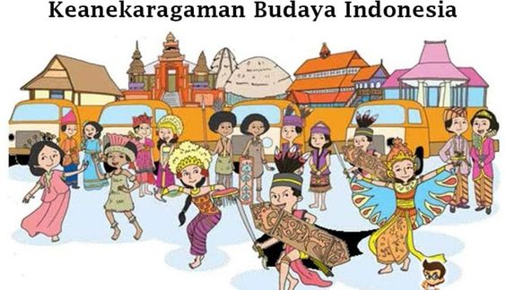
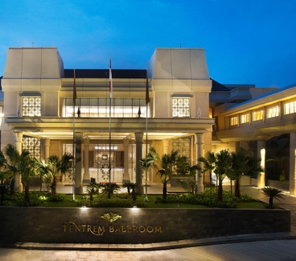

Jelajahi keindahan dan budaya Indonesia. Indonesia menawarkan beragam lanskap, mulai dari pantai yang memukau dan hutan hujan tropis hingga candi kuno dan kota-kota yang ramai. Temukan tradisi yang kaya, masakan lezat, dan keramahan yang hangat yang menjadikan Indonesia destinasi unik bagi para pelancong.
Indonesia terdiri dari lebih dari 17.000 pulau, masing-masing dengan pesona dan keunikan tersendiri. Pulau Bali terkenal dengan pantainya yang indah, kehidupan malam yang meriah, dan budaya yang kaya. Pulau Jawa adalah rumah bagi ibu kota Jakarta yang modern dan bersejarah, serta Yogyakarta yang terkenal dengan Candi Borobudur dan Candi Prambanan.
Papua, bagian timur Indonesia, memiliki Raja Ampat yang dikenal sebagai surga bagi penyelam dengan keanekaragaman hayati laut yang luar biasa. Lombok, tetangga Bali, menawarkan pantai-pantai yang tenang, Gunung Rinjani yang menantang untuk pendakian, dan Kepulauan Gili yang eksotis.
Dengan kombinasi alam yang memukau, warisan budaya yang kaya, dan masyarakat yang ramah, Indonesia adalah destinasi yang sempurna untuk petualangan dan eksplorasi tanpa batas.

Kebudayaan Indonesia
Tari Kecak
Tari Kecak adalah salah satu tarian tradisional Bali yang terkenal. Tarian ini unik karena tidak diiringi oleh musik gamelan seperti kebanyakan tarian Bali lainnya, tetapi oleh paduan suara sekitar 50-70 pria yang duduk melingkar dan menyerukan kata "cak" secara berirama. Tari Kecak menceritakan kisah Ramayana, khususnya adegan di mana Rama dan Sita diserang oleh Rahwana.
Keunikan lain dari Tari Kecak adalah tarian ini sering dilakukan di tempat-tempat terbuka, seperti di Pura Uluwatu yang terletak di tebing pantai. Pertunjukan biasanya dilakukan saat matahari terbenam, menambah kesan magis dan dramatis pada tarian ini. Tari Kecak tidak hanya menjadi simbol kebudayaan Bali, tetapi juga menjadi daya tarik wisata yang memikat banyak turis domestik dan internasional.
Upacara Ngaben
Upacara Ngaben adalah salah satu upacara paling sakral dalam kebudayaan Bali. Ngaben adalah upacara pembakaran jenazah yang melambangkan penyucian roh orang yang telah meninggal untuk kembali ke alam semesta. Upacara ini diyakini sebagai cara untuk membebaskan roh dari ikatan duniawi sehingga dapat menuju alam keabadian.
Proses Ngaben melibatkan banyak tahapan dan persiapan yang dilakukan oleh keluarga dan komunitas. Dimulai dari pembersihan jenazah, pembuatan patung atau wadah berbentuk lembu atau bangunan lain yang digunakan sebagai tempat pembakaran. Pada hari yang ditentukan, arak-arakan yang meriah akan membawa jenazah ke tempat pembakaran. Suasana upacara penuh dengan doa, musik gamelan, dan ritual yang mengiringi proses pembakaran.
Upacara Ngaben tidak hanya menjadi simbol penghormatan terakhir bagi yang meninggal, tetapi juga mencerminkan keharmonisan antara manusia dan alam semesta dalam budaya Bali. Turis dari berbagai negara sering datang untuk menyaksikan upacara ini sebagai bagian dari pengalaman budaya mereka di Bali.
Tempat Wisata Terbaik di Indonesia
Bali
Bali terkenal dengan pantainya yang indah seperti Kuta, Sanur, dan Nusa Dua. Pantai-pantai ini menawarkan pengalaman yang berbeda-beda, mulai dari kehidupan malam yang ramai hingga suasana santai yang tenang. Berikut ini penjelasan tentang beberapa pantai terkenal di Bali:
Pantai Kuta
Pantai Kuta adalah salah satu pantai paling terkenal di Bali. Terletak dekat dengan bandara, pantai ini mudah diakses dan populer di kalangan turis. Kuta menawarkan pemandangan matahari terbenam yang menakjubkan, ombak yang cocok untuk berselancar, dan berbagai restoran, bar, serta toko-toko suvenir. Kehidupan malam di Kuta sangat ramai, menjadikannya tempat favorit bagi mereka yang mencari hiburan malam.
Pantai Sanur
Pantai Sanur dikenal dengan suasana yang lebih tenang dan santai dibandingkan dengan Kuta. Pantai ini memiliki pasir putih yang halus dan air yang tenang, ideal untuk berenang dan snorkeling. Sanur juga terkenal dengan jalur pejalan kaki di tepi pantainya yang indah, sempurna untuk berjalan-jalan atau bersepeda sambil menikmati pemandangan laut. Area sekitar Sanur memiliki banyak resor mewah, restoran, dan kafe yang menawarkan suasana santai.
Pantai Nusa Dua
Pantai Nusa Dua adalah destinasi eksklusif yang dikenal dengan resor mewah dan fasilitas kelas atas. Pantai ini menawarkan pasir putih yang bersih dan air yang jernih, cocok untuk berenang dan berbagai aktivitas olahraga air. Nusa Dua juga memiliki taman yang indah dan lapangan golf, menjadikannya tempat yang ideal untuk liburan keluarga dan pasangan yang mencari ketenangan dan kemewahan.
Yogyakarta
Yogyakarta terkenal dengan keindahan candi-candi bersejarahnya dan kawasan Malioboro yang ramai. Berikut ini penjelasan tentang Candi Borobudur, Candi Prambanan, dan kawasan Malioboro:
Candi Borobudur
Candi Borobudur adalah salah satu monumen Buddha terbesar di dunia dan merupakan situs Warisan Dunia UNESCO. Dibangun pada abad ke-8 oleh dinasti Syailendra, candi ini terdiri dari sembilan platform bertingkat, dengan bagian atas berbentuk stupa besar. Dinding-dinding candi dihiasi dengan relief-relief yang menggambarkan ajaran Buddha dan kehidupan sehari-hari masyarakat pada masa itu. Borobudur sering digunakan sebagai tempat perayaan Waisak, yang menarik banyak umat Buddha dari seluruh dunia.
Candi Prambanan
Candi Prambanan adalah kompleks candi Hindu terbesar di Indonesia, juga merupakan situs Warisan Dunia UNESCO. Dibangun pada abad ke-9, candi ini didedikasikan untuk Trimurti, tiga dewa utama dalam agama Hindu: Brahma, Wisnu, dan Siwa. Kompleks candi terdiri dari beberapa candi besar dan kecil, dengan candi utama yang menjulang tinggi setinggi 47 meter. Prambanan terkenal dengan arsitekturnya yang megah dan ukiran-ukiran indah yang menggambarkan cerita-cerita dari epik Ramayana.
Kawasan Malioboro
Malioboro adalah pusat perdagangan dan hiburan di Yogyakarta, yang selalu ramai dengan aktivitas. Jalan Malioboro dipenuhi dengan berbagai toko, pasar, restoran, dan kafe, menawarkan berbagai macam barang mulai dari batik, kerajinan tangan, hingga makanan lokal. Pada malam hari, kawasan ini semakin hidup dengan hadirnya pedagang kaki lima yang menjual berbagai makanan tradisional. Malioboro juga menjadi tempat yang ideal untuk menikmati suasana kota Yogyakarta yang khas, dengan delman dan becak yang berlalu-lalang.
Raja Ampat
Raja Ampat dikenal dengan keindahan bawah lautnya yang menjadi surga bagi para penyelam. Terletak di Papua Barat, Raja Ampat adalah kepulauan yang terdiri dari sekitar 1.500 pulau kecil, atol, dan beting. Berikut ini penjelasan tentang keindahan bawah laut di Raja Ampat:
Keanekaragaman Hayati
Raja Ampat merupakan salah satu ekosistem laut terkaya di dunia. Wilayah ini memiliki lebih dari 1.300 spesies ikan, 600 spesies karang keras, dan banyak spesies laut lainnya. Keanekaragaman hayati yang luar biasa ini menjadikan Raja Ampat sebagai destinasi utama bagi para penyelam dan ilmuwan kelautan dari seluruh dunia.
Spot Menyelam Terbaik
Beberapa spot menyelam terbaik di Raja Ampat antara lain Cape Kri, Blue Magic, dan Manta Sandy. Cape Kri terkenal dengan jumlah spesies ikan yang bisa ditemukan dalam satu kali penyelaman. Blue Magic menawarkan pengalaman menyelam dengan hiu karang, ikan pari, dan berbagai jenis ikan karang lainnya. Manta Sandy adalah tempat terbaik untuk melihat ikan pari manta yang anggun berenang di sekitar penyelam.
Keindahan Terumbu Karang
Terumbu karang di Raja Ampat sangat indah dan berwarna-warni, menciptakan pemandangan bawah laut yang spektakuler. Formasi karang yang unik dan kesehatan ekosistem terumbu karang di Raja Ampat menjadikannya salah satu tempat menyelam terbaik di dunia. Selain itu, visibilitas air yang jernih memungkinkan penyelam untuk melihat keindahan ini dengan sangat jelas.
Ekowisata dan Konservasi
Pemerintah lokal dan berbagai organisasi konservasi bekerja sama untuk melindungi ekosistem laut di Raja Ampat. Ekowisata berkelanjutan menjadi fokus utama, dengan tujuan menjaga keanekaragaman hayati sambil memberikan manfaat ekonomi bagi masyarakat setempat. Wisatawan diajak untuk berpartisipasi dalam kegiatan konservasi dan diajarkan pentingnya menjaga kelestarian alam bawah laut.
Hotel Favorit
Hotel Tentrem Yogyakarta
Hotel Tentrem Yogyakarta merupakan satu dari sekian banyak hotel bintang 5 yang sering menjadi andalan wisatawan yang berlibur di Kota Jogja. Terletak di Jalan AM Sangaji No. 72 A, Yogyakarta, hotel yang didesain dengan nuansa Jawa modern ini siap memanjakan tamu dengan fasilitas kelas satu.

Fasilitas: Kolam renang, spa, restoran, pusat kebugaran, ballroom
Harga: Mulai dari Rp 4.200.000 per malam
Alamat: Jl. AM Sangaji No. 72 A, Yogyakarta
Informasi Penting: Dekat dengan pusat perbelanjaan dan landmark kota, Malioboro atau Pasar Beringharjo
Grand Hyatt, Bali
Grand Hyatt Bali adalah hotel bintang 5 yang menawarkan pengalaman mewah dengan pemandangan pantai yang menakjubkan. Terletak di kawasan Nusa Dua, hotel ini dikelilingi oleh taman tropis yang indah dan memiliki akses langsung ke pantai.
Fasilitas: Pantai pribadi, kolam renang, spa, restoran, klub anak-anak
Harga: Mulai dari Rp 4.500.000 per malam
Alamat: Kawasan Wisata Nusa Dua BTDC, Bali
Informasi Penting: Terletak di kawasan Nusa Dua yang eksklusif
Misool Eco Resort, Raja Ampat
Misool Eco Resort adalah salah satu resort terbaik di Raja Ampat yang menawarkan pengalaman menginap yang ramah lingkungan. Terletak di pulau pribadi yang dikelilingi oleh keindahan bawah laut, resort ini merupakan destinasi impian bagi para penyelam dan pecinta alam.
Fasilitas: Pusat menyelam, spa, restoran, pantai pribadi
Harga: Mulai dari Rp 6.500.000 per malam
Alamat: Misool Island, Raja Ampat, Papua Barat
Informasi Penting: Terletak di pulau pribadi dengan akses eksklusif ke spot menyelam terbaik
Informasi Tambahan
Visa
Wisatawan dari berbagai negara dapat berkunjung ke Indonesia dengan visa turis. Berikut adalah beberapa persyaratan umum untuk mendapatkan visa turis ke Indonesia:
Paspor yang masih berlaku minimal 6 bulan sejak tanggal kedatangan.
Tiket pulang pergi atau tiket lanjutan ke negara lain.
Formulir aplikasi visa yang telah diisi.
Foto berwarna terbaru (ukuran paspor).
Bukti keuangan yang cukup untuk masa tinggal di Indonesia.
Pembayaran biaya visa (jika diperlukan).
Untuk beberapa negara, Indonesia menyediakan fasilitas bebas visa atau visa on arrival. Pastikan untuk memeriksa kebijakan visa terbaru dari Kedutaan Besar atau Konsulat Indonesia di negara Anda.
Transportasi
Indonesia menawarkan berbagai opsi transportasi untuk wisatawan, termasuk:
Sewa Mobil: Wisatawan dapat menyewa mobil dari berbagai perusahaan penyewaan mobil di bandara, hotel, atau pusat kota. Beberapa penyewaan mobil juga menyediakan layanan sopir untuk kenyamanan lebih.
Taksi: Taksi tersedia di hampir semua kota besar di Indonesia. Pastikan untuk menggunakan taksi resmi dengan argo meter untuk tarif yang lebih adil.
Ojek: Ojek adalah sepeda motor yang disewakan dengan pengemudi dan sangat populer di kota-kota besar. Layanan ojek online seperti Gojek dan Grab juga tersedia dan mudah diakses melalui aplikasi.
Transportasi Umum:
Bus: Tersedia di hampir semua kota besar dan antar kota. Layanan bus TransJakarta di Jakarta dan TransJogja di Yogyakarta adalah pilihan populer untuk perjalanan dalam kota.
KRL (Kereta Rel Listrik): Beroperasi di area Jabodetabek (Jakarta, Bogor, Depok, Tangerang, Bekasi) dan merupakan pilihan transportasi yang efisien untuk menghindari kemacetan.
MRT dan LRT: Moda Raya Terpadu (MRT) dan Lintas Rel Terpadu (LRT) adalah sistem transportasi modern yang tersedia di Jakarta untuk perjalanan cepat dan nyaman.
Penerbangan Domestik: Untuk perjalanan antar pulau, penerbangan domestik adalah pilihan terbaik dengan banyak maskapai yang menyediakan penerbangan reguler ke berbagai destinasi di seluruh Indonesia.